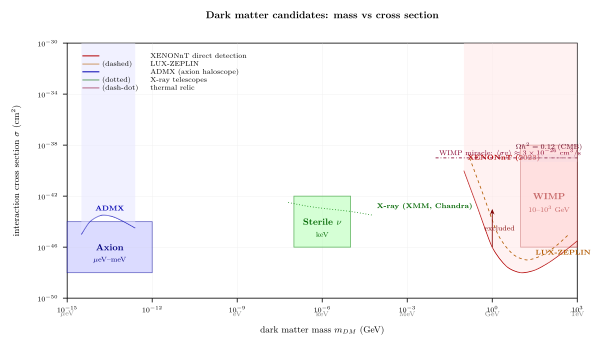

暗物质粒子的候选 — WIMP, Axion, 还是更怪的东西?
把粒子物理和宇宙学搭在一起的最不可忽视的事实是: 今天整个宇宙的能量密度里, 只有约 5% 是我们在这一卷前 25 节推过的那种粒子 (夸克, 轻子, 规范玻色子, Higgs 组成的重子物质). 另外约 26% 以 "会引力作用但完全不发光" 的形式存在, 26% 大约是 5 倍的重子量; 剩下的 $\sim 69\%$ 是更玄的暗能量, 与本节无关. 暗物质的五条独立证据分别来自不同尺度: 星系团中星系速度弥散 (Zwicky 1933), 单个星系的自转曲线 (Rubin 1970s), 引力透镜 (尤其是 Bullet Cluster 2006, 子弹星系团里热气体 X-ray 团与引力透镜质量中心错位, 直接否定"修改引力"解释), 大尺度结构形成 (没有冷暗物质根本做不出今天的星系网络), 以及 CMB 各向频峰的相对高度 (Planck 把 $\Omega_{DM}h^2$ 测到千分之一). 这五条是独立的, 各自从不同物理 (动力学 / 光子动量 / 引力几何 / 流体不稳定 / 辐射声学) 指向同一个结论: 宇宙中有一种"冷", "弱"(或无)相互作用的粒子在主导引力坍缩.
问题是: 这种粒子是什么? 粒子物理能提供的候选并不是一个, 而是一整家, 质量跨度从 $\mu$eV ($10^{-6}$ eV) 到 $M_\odot$ 级的原初黑洞, 32 个数量级. 这节要干的事是从理论侧把三类最受关注的候选 —— WIMP, axion, sterile neutrino —— 的物理内核讲清楚, 再把它们放到实验排除线下检验哪一类还活着. 中间严格 deepdive 的是 "WIMP miracle": 为什么一个弱尺度的 thermal relic 会自然地给出 $\Omega \sim 0.1$.
一、五条观测证据: 从 Zwicky 1933 到 Planck 2018
先把"暗物质确实存在"的证据按时间顺序梳理, 因为之后所有粒子物理候选都在回答这组观测.
Zwicky 1933 (Coma cluster). Fritz Zwicky 用 virial 定理估算 Coma 星系团: 对一个引力束缚的自引力系统, $2\langle T\rangle + \langle U\rangle = 0$, 即 $M \approx R\langle v^2\rangle/G$. 他测得 Coma 中星系速度弥散 $\sigma_v \approx 1000$ km/s, 半径 $R \approx 1$ Mpc, 于是
$$M_{\rm Coma} \approx \frac{R\sigma_v^2}{G} \approx \frac{3\times 10^{22}\,\mathrm{m}\cdot(10^6\,\mathrm{m/s})^2}{6.67\times 10^{-11}\,\mathrm{m}^3/\mathrm{kg/s}^2} \approx 4.5\times 10^{44}\,\mathrm{kg}.$$而发光物质 (星系的星光 + 估算气体) 只有这个数的 1/400 左右. Zwicky 用德文发表在 Helvetica Physica Acta, 首次用了 dunkle Materie (暗物质) 一词. 当时没人当回事, 因为光谱误差和 Hubble 常数的值都还很不准, 被搁置了四十年.
Rubin 1970s (galactic rotation). Vera Rubin 与 Kent Ford 用 Lowell Observatory 的分光仪, 系统测了几十个螺旋星系的氢 21 cm 线和光学 $H_\alpha$ 发射线红移, 得出轨道速度随半径的曲线. Kepler 预言 $v(r) = \sqrt{GM(\lt r)/r}$ 在发光盘之外应该按 $1/\sqrt r$ 下降, 但 Rubin 看到的是: $v(r)$ 在 10-50 kpc 范围内平稳停在 $\sim 200-250$ km/s, 完全没有 Kepler 下降的迹象. 这意味着 $M(\lt r) \propto r$, 星系外有一个巨大的、延伸远超发光盘的球状暗晕. 对银河系 $r = 50$ kpc 处
$$M(\lt 50\,\mathrm{kpc}) \approx \frac{v^2 r}{G} \approx \frac{(220\,\mathrm{km/s})^2 \cdot 50\,\mathrm{kpc}}{G} \approx 5\times 10^{41}\,\mathrm{kg} \approx 2.5\times 10^{11}\,M_\odot,$$比发光质量大 5-10 倍. 这是第一条无可辩驳的动力学证据.
Bullet Cluster 2006. 两个星系团 1E 0657-56 刚刚对穿而过, 各自的热气体因彼此电磁碰撞而减速、滞留在中间, 而无碰撞的 DM 分布仍然跟着各自的星系继续往两边飞. Chandra 的 X-ray 看到热气体 (重子的大部分) 在中间, 而 Hubble + Magellan 的弱引力透镜重构出来的质量图却在两侧 —— 质量中心与重子中心明显错位. 这条证据实在残忍地直接否定了 "修改 Newton 引力 (MOND)" 类的解释: 因为 MOND 只能让引力追着重子, 没法让引力偏移出重子的位置.
CMB 各向异性 (Planck 2018). 宇宙背景辐射的功率谱 $C_\ell$ 上, 声学峰的相对高度对重子/暗物质比值极其敏感. 第 1 峰高度 $\propto \Omega_b + \Omega_{DM}$ (总物质), 第 2 与第 3 峰的比值则对 $\Omega_b/\Omega_{DM}$ 敏感 —— 重子在光子海里造成阻尼 (baryonic loading), 让奇数峰被放大. Planck 2018 给出
$$\Omega_b h^2 = 0.02237 \pm 0.00015, \qquad \Omega_{DM} h^2 = 0.1200 \pm 0.0012,$$比值 $\Omega_{DM}/\Omega_b \approx 5.36$. $h = H_0/(100\,\mathrm{km/s/Mpc}) \approx 0.674$. 这条证据的精妙之处是: 它来自 $z \approx 1100$ 的早期宇宙, 当时还没有星系, 还没有恒星, 但光子与等离子体的耦合力学已经"感觉到"了暗物质的引力势阱, 并把它写进了 CMB 温度涨落的角功率谱.
五条证据合起来告诉我们: 暗物质粒子必须冷 (非相对论, 否则擦除小尺度结构), 不带电 (否则会在 CMB 上留下清晰的阻尼尾迹), 弱碰撞或无碰撞 (Bullet Cluster 限制 $\sigma_{DM-DM}/m \lesssim 1\,\mathrm{cm}^2/\mathrm g$), 并且稳定 (寿命 $\tau \gg$ 宇宙年龄 $\approx 13.8$ Gyr). 这四条合起来构成了任何 DM 候选必须通过的"准入门槛".

二、Cliché 严格 deepdive: WIMP miracle 的 Boltzmann freeze-out 完整推导
"WIMP miracle" 这句口头禅在粒子物理和宇宙学的交界上被念了三十年, 但认真把 Boltzmann 方程积一遍得出"相遇"的文献出奇地少. 我们这一节一步不省地推.
第 1 步: 宇宙膨胀下的数密度方程. 设 DM 粒子 $\chi$ 是自共轭 Majorana 费米子 (推导对一般情况平凡推广), 在早期宇宙与 SM 粒子热平衡. 通过 $\chi\chi \leftrightarrow \bar f f$ 这类湮灭过程维持平衡. 在 Friedmann-Robertson-Walker 宇宙中, 其数密度 $n_\chi$ 的演化由 Boltzmann 方程支配
\begin{equation} \frac{dn_\chi}{dt} + 3Hn_\chi = -\langle\sigma v\rangle\left(n_\chi^2 - n_{\chi,{\rm eq}}^2\right), \label{eq:boltzmann} \end{equation}其中 $H = \dot a/a$ 是 Hubble 膨胀率, $\langle\sigma v\rangle$ 是 (热平均) 湮灭截面乘相对速度, $n_{\chi,{\rm eq}}$ 是该温度下的平衡数密度. 左侧 $3Hn$ 项是"膨胀稀释", 右侧第一项是湮灭减损, 第二项是反向产生.
第 2 步: 无量纲化. 早期辐射主导时代, $\rho = (\pi^2/30)g_*T^4$, Friedmann 给出
$$H^2 = \frac{8\pi G}{3}\rho = \frac{8\pi^3 G}{90}g_* T^4 \ \Rightarrow\ H(T) = \sqrt{\frac{8\pi^3 g_*}{90}}\frac{T^2}{M_{\rm Pl}} \equiv 1.66\sqrt{g_*}\frac{T^2}{M_{\rm Pl}},$$其中 $M_{\rm Pl} = G^{-1/2} \approx 1.22\times 10^{19}$ GeV. 定义无量纲变量 $x \equiv m_\chi/T$ 与 yield $Y \equiv n_\chi/s$, 其中熵密度 $s = (2\pi^2/45)g_{*s}T^3$. 熵守恒 $sa^3 = \mathrm{const}$ 保证 $Y$ 只随物理 (非膨胀) 效应改变. Boltzmann 方程被变形为
$$\frac{dY}{dx} = -\frac{\langle\sigma v\rangle s}{xH}\left(Y^2 - Y_{\rm eq}^2\right)\bigg|_{T=m/x}.$$第 3 步: 平衡 yield 在非相对论极限. 当 $T \ll m_\chi$ (即 $x \gg 1$), 平衡数密度按 Maxwell-Boltzmann 衰减
$$n_{\chi,{\rm eq}}(T) = g\left(\frac{mT}{2\pi}\right)^{3/2}e^{-m/T}, \qquad Y_{\rm eq}(x) \propto x^{3/2}e^{-x}.$$$Y_{\rm eq}$ 随 $x$ 指数下降. 如果始终保持平衡, 今天的 DM 丰度将是荒谬地小 ($e^{-x}$ 在 $x \sim 100$ 已经是 $10^{-44}$). 现实是平衡崩溃.
第 4 步: freeze-out 判据. 平衡维持的条件是湮灭率 $\Gamma = n\langle\sigma v\rangle$ 比 Hubble 膨胀率大: $\Gamma \gt H$. 当温度降到 $\Gamma(T_f) \sim H(T_f)$, 粒子彼此 "找不到对方了", 湮灭基本冻结, yield $Y$ 停留在当时的值. 这个 $T_f$ 叫做 freeze-out 温度. 具体地, 当 $x\gg 1$:
$$n_\chi \langle\sigma v\rangle \sim H \ \Rightarrow\ g(mT)^{3/2}e^{-m/T}\langle\sigma v\rangle \sim \sqrt{g_*}T^2/M_{\rm Pl}.$$解这个代数 (取对数然后迭代) 得 $x_f \approx 20-30$ 对于广义 WIMP 几乎通用 (弱的对数依赖 $x_f \propto \ln(m M_{\rm Pl}\langle\sigma v\rangle)$). 取 $x_f \approx 25$.
第 5 步: freeze-out 后的 yield. $x \gt x_f$ 时 $Y \gg Y_{\rm eq}$, Boltzmann 方程简化为
$$\frac{dY}{dx} \approx -\frac{\lambda}{x^2}Y^2, \qquad \lambda \equiv \frac{m_\chi^3 \langle\sigma v\rangle}{H(T=m_\chi)}\cdot\frac{s(T=m_\chi)}{m_\chi^3} = \text{const factor}.$$具体化: 取 $\langle\sigma v\rangle$ 与 $x$ 无关 (s-wave), 则 $dY/dx = -C\langle\sigma v\rangle Y^2/x^2$ 其中 $C = s/(Hx^2)\big|_{T=m/x}$ 是个 $x$-无关常数. 积分从 $x_f$ 到 $\infty$:
$$\frac{1}{Y_\infty} - \frac{1}{Y_f} = C\langle\sigma v\rangle\int_{x_f}^\infty\frac{dx}{x^2} = \frac{C\langle\sigma v\rangle}{x_f}.$$$Y_f \gg Y_\infty$ 所以左边第二项可忽略, 给
$$Y_\infty = \frac{x_f}{C\langle\sigma v\rangle} \propto \frac{1}{\langle\sigma v\rangle}.$$第 6 步: 今天的丰度. 今天物质丰度
$$\Omega_\chi h^2 = \frac{\rho_\chi(t_0)}{\rho_c/h^2} = \frac{m_\chi Y_\infty s_0}{\rho_c/h^2},$$其中 $s_0 = 2891\,\mathrm{cm}^{-3}$ 是今天的熵密度, $\rho_c/h^2 = 1.054\times 10^{-5}\,\mathrm{GeV/cm}^3$. 把所有常数替进来 (包括 $g_* \approx 80$ 在 freeze-out 时, $x_f \approx 25$), 就得到 WIMP miracle 的标志公式
\begin{equation} \Omega_\chi h^2 \approx \frac{3\times 10^{-27}\,\mathrm{cm}^3\mathrm{s}^{-1}}{\langle\sigma v\rangle}. \label{eq:relic} \end{equation}第 7 步: 代入弱尺度截面. 弱相互作用的典型热平均截面量级
$$\langle\sigma v\rangle_{\rm weak} \sim \frac{G_F^2 m_\chi^2}{\pi} \sim \frac{(1.17\times 10^{-5}\,\mathrm{GeV}^{-2})^2(100\,\mathrm{GeV})^2}{\pi} \approx 4\times 10^{-10}\,\mathrm{GeV}^{-2} \approx 1.6\times 10^{-26}\,\mathrm{cm}^3/\mathrm s,$$(用 $1\,\mathrm{GeV}^{-2} = 3.89\times 10^{-28}\,\mathrm{cm}^2$ 以及 $c = 3\times 10^{10}$ cm/s). 代入式 \eqref{eq:relic}
$$\Omega_\chi h^2 \approx \frac{3\times 10^{-27}}{1.6\times 10^{-26}} \approx 0.19,$$与观测值 0.12 同阶! 这就是 "WIMP miracle": 一个完全独立于宇宙学的弱相互作用尺度, 通过纯 thermal freeze-out, 自动产出约 right 的暗物质丰度. 不同的 WIMP 模型 (Neutralino, Kaluza-Klein, minimal dark matter...) 会给出 $\mathcal O(1)$ 级的修正, 但基本都能卡在 $\Omega h^2 \sim 0.1$ 的门附近. 这是过去三十年粒子物理社群对 WIMP 如此执着的根本原因: 它不仅能做 DM, 还能自然地 恰好 做出那么多的 DM.
一句哲学补注: "miracle" 这个词是带讽刺的 —— 并不是说巧合, 而是说"两个看似不相关的 scale (弱尺度 $\sim$ 100 GeV 与宇宙学 $\rho_c$) 给出相容的数字". 当然这也暗示: 如果 WIMP 在直接探测中被完全排除, 我们就失去了一个最优雅的 "为什么弱尺度" 的理由, BSM 的格局会发生质变.
三、Axion 与 sterile neutrino: 另外两条完全不同的路径
WIMP 假设 DM 是通过热平衡 + freeze-out 生成的. 但"冷"暗物质不一定曾经热过. 两种重要的非 WIMP 路径:
Axion (Peccei-Quinn 1977). Axion 是为解决强 CP 问题(下一节话题) 而引入的赝 Nambu-Goldstone 玻色子, 质量来自 QCD 瞬子导致的势能
$$V(a) = \Lambda_{QCD}^4\left(1 - \cos\frac{a}{f_a}\right) \Rightarrow m_a \approx \frac{\Lambda_{QCD}^2}{f_a} \approx 6\,\mu\mathrm{eV}\left(\frac{10^{12}\,\mathrm{GeV}}{f_a}\right).$$它的 DM 生成机制完全不同: 在 Peccei-Quinn 破缺之后到 QCD 相变之前, $a$ 场的真空期望值可以在任何角度 (misalignment mechanism); 当 QCD 相变给它质量之后, 它开始在 $V(a)$ 底部震荡, 这些相干震荡的能量密度就以 $\rho \propto a^{-3}$ 衰减 —— 即"冷"物质的行为. 估算 yield 得到 $\Omega_a h^2 \sim (f_a/10^{12}\,\mathrm{GeV})^{7/6}\theta_i^2 \sim 0.1$ 当 $f_a \sim 10^{12}$ GeV 与 $\theta_i \sim \mathcal O(1)$. 这里 axion 从未热平衡过, 它是非热 DM, 极其轻 ($\mu$eV) 但粒子数密度极大, 整体行为仍然是 "冷" 的 (相干波长短, 速度弥散几乎为零).
实验寻找: ADMX 实验用一个大磁场的谐振腔把 axion 转化为微波光子 (Primakoff 反向), 当腔频率扫过 $m_a c^2/h$ 时会有信号. 目前对 $m_a \in [1.9, 4.2]$ $\mu$eV 的 "DFSZ 型" axion 耦合已排除, 窗口仍在收窄中.
Sterile neutrino ($\sim$ keV). 假设右手中微子 $\nu_R$ 与左手几乎完全脱耦 (sterile), 但仍通过微小的 Yukawa 混合 $\sin^2(2\theta) \sim 10^{-10}$ 与活性中微子相联系. 它可以通过 Dodelson-Widrow 机制 (1994) 在早期宇宙振荡产生, 或通过重玻色子衰变在更早的 epoch 生成. 质量 $\sim$ keV, 热产生但比 WIMP 轻得多, 相空间有一点 "温" (warm DM), 在小尺度上会擦除一些结构 —— 这一点既是它的实验签名 (Lyman-$\alpha$ 森林限制 $m_s \gtrsim 3$ keV), 也是它的麻烦 (如果擦得太多, 矮星系数量就不对).
它的直接探测方式非比寻常: sterile 中微子有极慢的衰变 $\nu_s \to \nu_a + \gamma$, 末态单光子能量 $\sim m_s/2$, 在 X 射线波段 1-10 keV. 望远镜 (XMM-Newton, Chandra, NuSTAR) 扫天河附近星系团的 X 射线谱, 寻找未被解释的单线. 2014 年 Bulbul et al. 与 Boyarsky et al. 独立报告 3.5 keV 的一条弱线, 可能对应 $m_s \approx 7$ keV 的 sterile neutrino, 但后续 DM-dominated 小矮星系没看到同样信号, 争议仍未完全解决.
更怪的候选. 原初黑洞 (PBHs, $10^{-18}-10^2\,M_\odot$ 级, 由早期宇宙密度涨落坍缩形成, 引力微引力透镜和 LIGO 双黑洞率都给了限制); 自相互作用暗物质 (SIDM, 允许 $\sigma/m \sim 1\,\mathrm{cm}^2/\mathrm g$ 来解释小尺度 "core-cusp"问题); fuzzy DM (极轻玻色子 $m \sim 10^{-22}$ eV, de Broglie 波长约为矮星系尺度, 天然给出 core); asymmetric DM (类似重子不对称机制, $\Omega_{DM}/\Omega_b \sim 5$ 不是巧合); 等等. 每一类都有它的一组观测签名和排除实验.
四、数字落地: 本地密度, 直接探测限制, 两类极限检验
把观测侧的几个关键数字再核一遍:
本地 DM 密度. 太阳附近 ($R_\odot = 8.3$ kpc) 的 DM 密度一般取 $\rho_{DM}(R_\odot) \approx 0.4\pm 0.1$ GeV/cm³. 这个值是从银河系旋转曲线拟合出来的: 假设 NFW 晕轮廓 $\rho(r) = \rho_s/[(r/r_s)(1+r/r_s)^2]$, 代入已知 $M(\lt r)$ 数据. 在太阳位置, $\rho \sim 10^{-24}$ kg/m³, 相当于每公升约 1 个 GeV 级粒子, 或每立方厘米 $1/1000$ 个 TeV 粒子. DM 粒子以 $v \sim 220$ km/s 从不对称方向 (银河系向动方向的前方) 流过地球探测器, 形成 "wind".
直接探测 XENONnT (2023). 一个 5.9 吨的液氙 TPC, 放在 Gran Sasso 山下屏蔽宇宙射线. WIMP 散射到 Xe 核会产生少量发光 + 电离信号, 由底部和顶部 PMT 读出. 2023 年公布的 spin-independent 截面上限 (对 $m_\chi = 30$ GeV)
$$\sigma_{\rm SI}^{\rm limit}(30\,\mathrm{GeV}) \approx 2.6\times 10^{-48}\,\mathrm{cm}^2,$$对 100 GeV 给 $\sim 6\times 10^{-48}$ cm². 和最初 WIMP 预期的"弱截面" $\sim 10^{-38}$ cm² 相比, 小了十个数量级. 过去十五年直接探测每 3-4 年把灵敏度提升一个数量级, 但 WIMP 仍未被发现. 大多数简单 supersymmetric neutralino 模型已被排除或逼到角落, 仍存活的模型依赖相对精细的调谐 (blind spots, co-annihilation regions).
极限检验 1: 重 WIMP 极限 ($m_\chi \to$ TeV). 当 $m_\chi \gg M_W$, unitarity 在 s 波给湮灭截面一个上界 $\langle\sigma v\rangle \le 4\pi/m_\chi^2$. 代入式 \eqref{eq:relic}: 要维持 $\Omega h^2 = 0.12$, 需 $\langle\sigma v\rangle \ge 2.5\times 10^{-26}\,\mathrm{cm}^3/\mathrm s$, 即 $m_\chi^2 \le 4\pi/\langle\sigma v\rangle$ 对应 $m_\chi \lesssim 340$ TeV. 这就是著名的 Griest-Kamionkowski 1990 上界 —— thermal WIMP 的质量绝不能超过约 340 TeV. 再重就没办法通过 freeze-out 生成.
极限检验 2: 轻 WIMP 极限 ($m_\chi \to$ few MeV). 相反方向, 如果 WIMP 太轻 (几 MeV 以下), 它在宇宙中微子解耦 (约 1 MeV) 时还热着, 把额外自由度灌入辐射密度, 破坏 BBN 对氦丰度和 CMB 上 $N_{\rm eff}$ 的限制 ($N_{\rm eff} = 2.99\pm 0.17$). 结果是 $m_\chi \gtrsim 10$ MeV 才能安全过 BBN + CMB 关, 如 Boehm-Dolan-McCabe 2013 算出的限制. 两个极限合起来, 热 WIMP 的质量窗口 $10$ MeV $\lesssim m_\chi \lesssim 340$ TeV 横跨了 7 个量级, 留出的空间其实比想象大 —— 如今 GeV-TeV 只是最受青睐的一段, 并不是唯一可能.
历史 + 里程碑补充. 1980 年 Bond, Salopek, Szalay 提出 CDM (cold dark matter) 范式, 指出冷 DM 能自洽解释 CMB 和结构形成. 1983 年 Blumenthal-Faber-Primack-Rees 用数值 N-body 确认: CDM 宇宙自然生成观测到的星系大尺度网络. 1996 年 Navarro-Frenk-White 给出 "NFW profile" 的普适性拟合. 2000 年代以来, Bertone-Hooper-Silk 等人的综述把 "WIMP = 首选" 的观点传播开. 但 2010 年代至今, 直接探测没有确认信号, LHC 也没找到超对称, 社群逐步把注意力分散到 axion, sterile, PBH, ALP (axion-like particles), hidden-sector DM 等更广的谱上. 今天 (2020s), 我们处于一个尴尬但有趣的时刻: "最自然"的 WIMP 几乎被排除, 但 DM 确实存在, 所以答案一定在某条 less natural 的路径上. 这迫使粒子物理 + 宇宙学同行重新思考 "什么叫自然".
小结
本节从五条独立观测 (Zwicky 1933 Coma 星系团 virial, Rubin 1970s flat rotation, Bullet Cluster 2006 透镜-气体错位, Planck 2018 $\Omega_{DM}h^2 = 0.120$, CDM 结构形成) 确立 DM 的存在, 并限定它必须"冷、电中性、几乎无碰撞、稳定". 然后严格推一遍 Boltzmann freeze-out 方程 \eqref{eq:boltzmann}: 从热平衡到 $\Gamma \sim H$ 冻结, 解出 yield $Y_\infty \propto 1/\langle\sigma v\rangle$, 给出 relic abundance 公式 \eqref{eq:relic} $\Omega_\chi h^2 \approx 3\times 10^{-27}\,\mathrm{cm}^3/\mathrm s / \langle\sigma v\rangle$; 代入弱截面 $G_F^2 m^2 \sim 1$ pb 恰好得 $\Omega \sim 0.1$ — 就是 "WIMP miracle". axion 走完全不同路径: Peccei-Quinn 破缺之后在 QCD 势阱里的相干 misalignment 震荡, 非热冷 DM, 质量 $\mu$eV 但仍"冷". Sterile $\nu$ 通过活性-Sterile 振荡在 keV 尺度产生, 走 warm DM 路线. 直接探测 XENONnT 给 $\sigma_{\rm SI}^{100\,\mathrm{GeV}} \lesssim 6\times 10^{-48}\,\mathrm{cm}^2$ — 比原始弱截面低 10 个量级, 最简 WIMP 正被逼到角落. 本地 $\rho_{DM}(R_\odot) \approx 0.4$ GeV/cm³ 是所有直接探测实验的入射通量归一化基础. 两个极限: 重 WIMP 上界 (unitarity) $m_\chi \lesssim 340$ TeV; 轻 WIMP 下界 (BBN + CMB) $m_\chi \gtrsim 10$ MeV. 下一节要进入 axion 诞生所在的 "强 CP 问题": QCD $\theta$ 角为什么实测上几乎为零, 而不是 $\mathcal O(1)$? 这是 axion 作为 DM 候选之外, 另一个令 Peccei-Quinn 机制不可或缺的动机 —— 粒子物理与宇宙学的又一次耦合.
▲